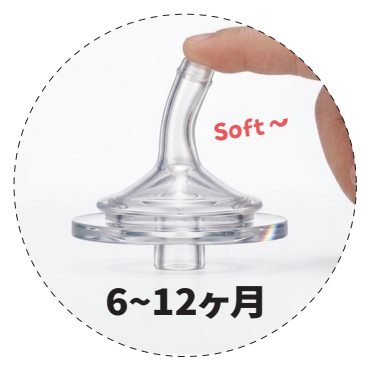
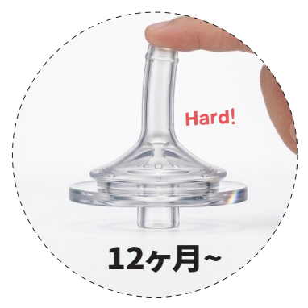
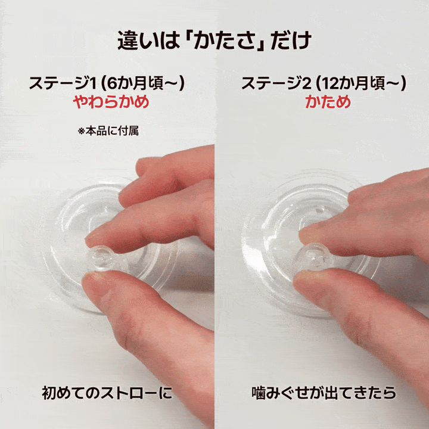
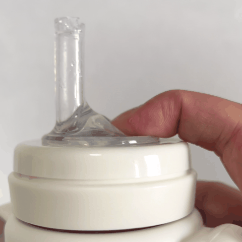
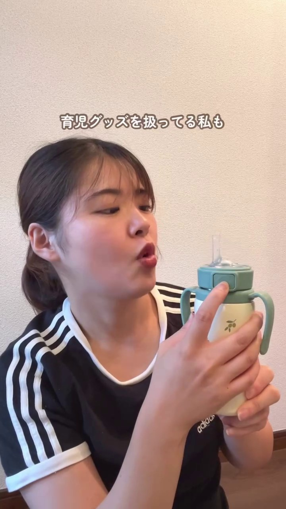

캡션
공동 게시
@grosmimi_japan 과의 공동 게시(콜라보 게시)로 설정해 주세요 ("공동 작성자 초대"에서)
브랜드명 표기
그로미미(GROSMIMI), Stage 1·Stage 2 스트로
해시태그
※ 유상·무상 불문 공통. 해시태그는 실제 투고용이라 일본어 원문 그대로입니다.


이가 나기 시작할 무렵부터. 1~2세에 피크, 세 돌 가까이까지 이어지기도.
새 빨대로 갈아줘도 금방 또 물어뜯기는 끝없는 재구매. 뜯긴 조각을 삼키지 않을까 하는 아찔한 불안까지.
단단한 빨대로 바꾸고 나서, 씹어도 더는 안 뜯긴다는 걸 알아차린 순간.
빨대를 물어뜯는 건 씹는 힘이 자랐다는 신호. 그로미미는 빨대가 Stage 1·Stage 2 2단계라서, 머그를 통째로 바꾸지 않아도 단단한 Stage 2 빨대로 갈아끼우기만 하면 됩니다.
"또 물어뜯겼네…" 하는 공감 장면으로 시작. 물어뜯긴 빨대나, 빨대를 씹고 있는 아기 모습 등.
먼저 "왜 씹는지"를 한마디로. 이어서 Stage 1에서 Stage 2로 빨대를 갈아끼우는 모습을 카메라 앞에서 그대로 보여준다.
아기가 Stage 2 빨대로 실제로 마시는 모습을 보여준다.
이가 나면서 씹는 힘이 자라고 있다는 신호. 많은 엄마가 같은 시기에 겪는 일이고, 아기가 잘못한 것도, 머그를 잘못 고른 것도 아니다.
그로미미 빨대는 Stage 1(부드러움)과 Stage 2(단단함) 2단계. 물어뜯기 시작하면 머그를 새로 사지 말고, 빨대만 Stage 2로 갈아끼우면 된다.
Stage 1과 Stage 2를 동시에 집어 단단함 차이를 보여준다. 그대로 빨대를 갈아끼우고, 아기에게 마시게 하는 장면까지 원컷으로.
"바꾸고 나서는 씹어도 안 뜯겨요"처럼, 본인 경험으로 변화를 전한다.
※ "절대 안 뜯긴다", "삼킴 사고를 방지한다" 같은 단정 표현은 피하고, 본인의 경험으로 말해 주세요.


NG ✕ 타사 로고·브랜드명 노출 금지

@grosmimi_japan 과의 공동 게시(콜라보 게시)로 설정해 주세요 ("공동 작성자 초대"에서)
그로미미(GROSMIMI), Stage 1·Stage 2 스트로
※ 유상·무상 불문 공통. 해시태그는 실제 투고용이라 일본어 원문 그대로입니다.